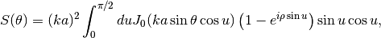
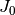

Sphere¶
For spherical particles, GGADT uses the following integral expression (see, e.g. [DA2006])

Here,  is the  Bessel function. By default, GGADT will numerically solve this integral (much faster than solving the general equations). You can force GGADT to use the general solution by passing the
Bessel function. By default, GGADT will numerically solve this integral (much faster than solving the general equations). You can force GGADT to use the general solution by passing the --force-numerical flag (alternatively, you can set force-numerical=T in your parameter file).
| [DA2006] | Draine, B. T., & Allaf-Akbari, K. 2006, ApJ, 652, 1318 |